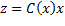

Journal of Automation and Control Research (JACR)
ISSN: 2368-6677

Volume 1, Year 2014 - Pages 1-10
DOI: 10.11159/jacr.2014.001
State Dependent Riccati Equation Control of an Active Hydro-Pneumatic Suspension System
Ferhat Sağlam1, Y. Samim Ünlüsoy2
1ASELSAN Inc., 06172 Yenimahalle, Ankara, Turkey
fesaglam@gmail.com
22Middle East Technical University, Mechanical Engineering Department, Dumlupinar Bulvari, No:1, 6800 Ankara, Turkey
unlusoy@metu.edu.tr
Abstract - In this study, a nonlinear active Hydro-Pneumatic (HP) suspension system is modelled. The HP suspension system model is then incorporated into the quarter car model and a nonlinear controller for the vehicle system is developed. A linear structured model with state dependent matrices of the nonlinear quarter car model is derived for use in controller design. A nonlinear control method, State Dependent Riccati Equation control (SDRE) is used to attenuate sprung mass acceleration, suspension deflection, and tire deflection. The performance of the controller is examined in both frequency and time domains. Active HP suspension system is simulated with sinusoidal inputs at discrete amplitudes and frequencies, and the approximate frequency response functions are obtained. The active HP suspension system is simulated with random road inputs and the root mean square values of the responses are used to evaluate the performance of the controller. The results show that the active suspension successfully and simultaneously decreases the sprung mass acceleration, suspension deflection, and tire deflection around body bounce frequency and thus improved ride comfort and road holding are obtained.
Keywords: Hydro-Pneumatic suspension, Active control, State Dependent Riccati Equation, Nonlinear control
© Copyright 2015 Authors This is an Open Access article published under the Creative Commons Attribution License terms. Unrestricted use, distribution, and reproduction in any medium are permitted, provided the original work is properly cited.
Date Received: 2014-06-08
Date Accepted: 2014-09-04
Date Published: 2014-10-10
1. Introduction
A suspension system is expected to isolate the vehicle body from road disturbances and keep the tires in contact with the road. Ride comfort is directly related with sprung mass acceleration and road holding is associated with tire deflection. Passive suspension systems can satisfy ride comfort and handling requirements only to a limited extend. To improve suspension performance, various active and semi-active suspensions have been proposed in the literature and there are numerous studies on the active control of the conventional suspension systems. Models of active systems in these studies are mostly linear and thus linear control methods have been applied to determine the desired active force. In some of the studies, hydraulic actuators which provide active force are included in the model and thus actuator dynamics are also taken into account. Basic functions of the suspensions, suspension control methodologies, and the theoretical and practical limitations of the controllable suspensions were examined in the study of the Karnopp and Heess [1]. Butsuen [2] examined invariant properties of the quarter car model and analysed different performance considerations in active suspension systems. Elmadany [3] proposed an optimal linear active suspension system controlled by a multivariable integral control. Alleyne et al. [4] examined linear and nonlinear control methods in active suspension systems. The desired active force was obtained using skyhook control methods and the realization of this desired control force from the hydraulic actuator was performed using Proportional, Integral, and Derivative (PID) control, feedback linearization control, and sliding control. They showed that active suspension with a nonlinear control method provided better performance than that with linear control. Pilbeam and Sharp [5] examined different active suspension system configurations with preview control together with power consumptions. Thompson and Chaplin [6] studied the inner loop force control in active suspensions. Applications of the optimal control theory in vehicle dynamics area were investigated in the study of Sharp and Peng [7]. There are other studies on active suspensions with conventional suspension systems which uses control approaches like H-infinity control [8], switched control [9], hybrid control [10], and fuzzy control [11].
Relatively few studies about the active control of the quarter car model with HP suspension system, however, have appeared in the literature. HP suspension systems are used commonly in heavy commercial vehicles and on-off road military vehicles. A HP suspension system has a gas volume, two oil volumes, and an orifice in its basic structure. Gas volume provides the suspension spring characteristics and the flow of oil through the orifice separating the two oil volumes provides the suspension damping characteristics. HP suspension systems are suitable for active and semi-active suspension implementations [12]. By changing the orifice opening area, a semi-active HP suspension system can be developed. Similarly, by introducing oil into or by extracting oil from the system from an external source, an active HP suspension system is obtained. However, for a conventional suspension system, a separate active force generator is required to achieve an active suspension system.
El-Demerdash and Crolla [13] studied the active and slow-active HP suspension systems with preview control. They developed a linear HP suspension system and used a linear optimal control approach for the active suspension. Gao et al. [14] linearized a HP suspension model and then obtained a reduced model to be used in the control applications. The objective of the controller was disturbance rejection and body leveling control. Linear quadratic control was used for the disturbance rejection. For leveling control, PID control which used the suspension deflection as the feedback was designed. Shi et al. [15] linearized a HP suspension model using feedback linearization method and then applied the sliding mode control to the linearized HP model to get an active HP suspension system. There are also studies about the active suspension of interconnected HP suspension systems. Rosam and Darling [16] designed an active roll controller to improve the roll motion for the interconnected HP suspension system. Schuman and Anderson [17] used an optimal control law to design a controller for an active suspension to control the roll motion in an interconnected HP suspension system. The nonlinear interconnected hydragas suspension model was linearized to design the linear optimal controller.
It is observed that, most of the studies related to the design of controllers for active suspensions involve conventional linear suspension systems. For these systems well-known linear control methods can be used to design the controller. There are, on the other hand, few studies about the active control of the HP suspension system with nonlinear controllers. Since the HP suspension system is inherently nonlinear due to the orifice and the gas equations, the designed controller should also be nonlinear to capture the system dynamics thoroughly. Linearizing the nonlinear HP suspension system for specific operating point and designing the controller for that point does not cover the whole dynamics of the system. For this reason, a nonlinear controller is essential to capture the real behavior.
Designing a suboptimal nonlinear controller for the quarter car with a nonlinear active HP suspension in a systematic manner is the main target of this study. The basic concern is the design of the active HP suspension to obtain improved ride comfort together with improved handling, taking the nonlinear behavior of the system into consideration. Therefore, a state space model with SDM of the nonlinear HP suspension system is derived by the extended linearization [18] to be used for the controller design. Polytropic gas model is rewritten as a polynomial gas equation such that the gas force is a polynomial function of the relative gas displacement. Thus, the gas force is expressed in terms of a linear stiffness equation with a state dependent spring coefficient. Similarly, the orifice equation is written as a linear damping equation with state dependent viscous coefficient. By this way, all nonlinearities of the original nonlinear HP suspension system are preserved. Then, a nonlinear control method, SDRE control, is used to design the nonlinear active controller. A nonlinear active controller is designed effectively and systematically instead of using more complicated formal nonlinear control approaches. The proposed method can also be applied to suspension system with different types of nonlinear spring and damper characteristics easily. Moreover, as explained in the reference [19], saturation on the oil flow rate can also be incorporated with the SDRE control. The control designers are required only to adjust the weighting parameters of the performance variables according to the aim of the control.
State Dependent Riccati Equation (SDRE) control is a systematic way of designing a nonlinear controller. It is similar to the Linear Quadratic Regulator (LQR) control and by applying the SDRE control as a nonlinear control method, all properties of the well-known LQR control can be exploited. Mracek and Cloutier [19] studied the theory of SDRE control and illustrated the applications of SDRE for nonlinear control problems. Banks et al. [20] studied the SDRE method for nonlinear control and estimation problems. Various methods for the solution of the SDRE were also covered in the study. An extensive review of the SDRE control was presented by Çimen [21]. In the literature, there are various applications of the SDRE control in different areas such as vehicle dynamics, aerospace, robotics, etc. Kanarachos et al. [22] and Jansen et al. [23] used the SDRE control for the design of the braking controller of electric vehicles. Alirezai et al. [24] developed a vehicle dynamics controller using the SDRE control and then they validated the performance of the controller experimentally. There are also studies which uses the SDRE control method to design nonlinear controllers for robotics, motor, and aerospace control [25-27].
The present paper is organized in five sections. After the introduction, an active nonlinear HP suspension system is modeled, and incorporated into the quarter car model. Then, the linear model with SDM of the nonlinear quarter car model is obtained. In section three, the performance index is formed and the SDRE control method is applied to the nonlinear quarter car model to attenuate sprung mass acceleration, suspension deflection, and tire deflection. Weighing coefficients in the performance index are adjusted according to the aim of the control. In section four, the performances of the controllers are examined making use of the frequency response plots of the sprung mass acceleration, suspension deflection, and tire deflection and of the simulations with random road displacement input in the time domain. Conclusion is given in the last section.
2. Active Hydro-Pneumatic Suspension System Model
The general layout of the quarter car model with active HP suspension system is shown in figure 1. In this study, the control input to the active suspension is assumed as the oil flow rate into the second chamber. The hydraulic circuit which produces this control input is not included in the scope of this study and therefore is not taken into account in the active control. A detailed analysis of the passive HP suspension system can be found in the thesis by Joo [28].
Equation of motion for the main piston is:
where P1 is the pressure in the first chamber, Ap is the piston area, M is the sprung mass, g is the constant of gravitational acceleration, zp is the sprung mass displacement, and Ff is the Coulomb friction between the piston seal and cylinder. Equation of motion for the floating piston is:
where P3 is the absolute gas pressure in the third chamber, P2 is the oil pressure in the second chamber, PAtm is the atmospheric pressure, Mfp is the floating piston mass, zfp is the floating piston displacement, and Ffp is the Coulomb friction between the floating piston seal and the cylinder. Assuming incompressible oil, the continuity equation for first and second chambers is:
where Qin is the oil flow rate which is the control input. The oil flow rate Q passing through the orifice can be found using the orifice equation assuming turbulent flow as
where Av is the orifice opening area, CD is the orifice loss factor, ρ is the oil density, and zt is the unsprung mass displacement. From the continuity equation for the oil volume at the first chamber, oil flow rate through the orifice can also be expressed as
The absolute gas pressure in the third chamber can be found using the polytropic gas model as

where P30 is the absolute gas pressure at static equilibrium, V30 is the volume of gas in the third chamber at static equilibrium, and γ is the polytropic gas coefficient. Equation of motion for the unsprung mass can be written similarly.
The equations derived so far can be used to simulate the active HP suspension system. The next step is the formation of the state dependent linear model of the active HP suspension system. To simplify the equations, floating piston mass and frictions between the piston seal and the cylinder can be neglected. To be able to obtain a spring equation in the form of a linear spring, a fifth degree (or higher) polynomial model is fitted to relative gas force by the least-square method as:

where a's are the polynomial coefficient, zfpt is relative displacement of the floating piston as defined in Eq. (12), and f1 is the state dependent gas stiffness defined as

As can be seen from Eq. (7), the polytropic gas equation is written as a linear spring equation with varying stiffness coefficient. Similarly, oil damping force Foil can be written as:

where f2 is the state dependent oil damping coefficient defined as

The oil damping force is written in the form of a linear viscous damping equation with state dependent damping coefficient. The orifice equation and the polytropic gas equation are converted into convenient representation to be used in SDRE control. As explained in reference [21], there are different ways of parameterization of the nonlinear equations in terms of state dependent coefficients and states for a system which has at least two states. This provides additional flexibility to formulate the SDRE control problems. State dependent parameterization of the polytropic gas equation and the orifice equation are performed by mimicking the linear spring equation and the linear viscous damping equation, respectively, among different possible parameterizations. Polytropic gas equation is expressed as the product of the relative displacement state and the state dependent spring coefficient. Similarly the orifice equation is expressed as the product of the relative velocity and the state dependent viscous damping coefficient.
The states are then defined as:


where z0 is the road displacement input. Then the state equations take the form:
where kt is the tire stiffness and Mt is the unsprung mass. In state space form, these equations can be written as

where x5x1 state vector as defined in Eq. (11-15), A5x5 is the state dependent system matrix, B5x1 is control input matrix, u is the control input which is oil flow rate , D5x1 is the disturbance input matrix, and w is the disturbance input which is the road velocity input.
3. Controller Design
After the nonlinear model of the HP suspension system is converted into linear state space model with state dependent parameter values, a nonlinear controller can be designed by the SDRE control. SDRE control is an effective and systematic way of designing nonlinear controllers. It provides a computationally simple way of designing nonlinear controllers and can be used instead of formal nonlinear control methods which involve complicated algorithms and numerical difficulties [21]. In the SDRE control, the first step is to obtain a state space model in which the matrices are functions of states. By this way, a linear structure of the nonlinear model is obtained while the nonlinearities in the model are fully captured by the state dependent parameter values. Then the cost function to be minimized is formed using the SDM. Thus Algebraic Matrix Riccati equation is also state dependent and is solved online along the trajectory of the states, resulting in a state dependent control law. After the state dependent linear model of the HP suspension system is obtained, SDRE control can be implemented. In this study, all states in the system are assumed to be available. Some of these states can also be estimated using an observer or state estimator by the SDRE method in which the observer gain can be found along the state trajectories by solving the SDRE. The SDRE control procedure is summarized in [19] as:
An input affine nonlinear system


can be expressed as

by direct parameterization where
The infinite horizon cost function

can be minimized by solving the SDRE along the state trajectories as

The control input can be formed as
In the active suspension control for the quarter car model, there are three performance criteria to be satisfied:
- Minimum sprung mass vertical acceleration for ride comfort,
- Minimum suspension deflection for suspension packaging, and
- Minimum tire deflection for road holding.
While satisfying these performances, the control input should be bounded. Therefore, the cost function to be minimized is expressed as
where q1, q2, q3, and R are the weighting coefficients for the states and for the control input. The schematic of the controller design for the active HP suspension system is given in figure 2.
In the HP suspension system, gas dynamics is modelled using polytropic gas equation. To be able to express the gas dynamics in linear structure with state dependent gas stiffness, polytropic gas equation is rewritten in polynomial form as formulated in Eq. (7). Therefore, nonlinear gas force is expressed as a linear stiffness equation with state dependent spring stiffness. At each step, the gas spring stiffness is updated with the relative displacement across the gas volume (second system state). Similarly, the orifice equation is rewritten as a linear viscous equation with state dependent damping coefficient as formulated in Eq. (9). Viscous damping coefficient is updated with the relative velocity of sprung mass with respect to the tire (first state-fourth state) at each time step. As figure 2 illustrates, updated gas spring stiffness and orifice damping coefficients are used to update the state space model with the SDM. By using this model and states, SDRE is solved at each time step with changing states. The solution of the SDRE is used to obtain the oil flow rate to the active suspension which is the control input. In the literature, different techniques are proposed for the solution of the SDRE [20]. For low order systems, SDRE can be solved algebraically or by symbolic manipulators. For higher order systems, interpolation methods can be used.
4. Results and Discussion
After the controller is designed, the performance of the controller is examined both in frequency domain and in time domain. In the frequency domain, the model is simulated by sine inputs with varying frequencies and amplitudes and the approximate frequency response functions (FRF) are obtained for the corresponding road input. At each frequency, sprung mass acceleration, suspension deflection, and the tire deflection FRFs are calculated as the ratio of the root mean square (rms) of the responses to the rms of the road velocity input. In the time domain, active suspension is simulated with random road displacement inputs and the rms of the responses are examined to evaluate the controller performance.
HP suspension system is a nonlinear system and thus it does not have a unique FRF. However, trials have shown that the active controller can improve the performance variables for different input amplitudes. Here, the primary aim of the active controller is the ride comfort and thus the controller is designed by adjusting the weighting coefficients accordingly in the cost function. The system parameters used in the simulations as well as weighting factors and the input parameters used in simulations are given in table 1. The FRFs obtained from simulations are given in figures 3-5.
Table 1. System, weighting, and input parameters
| System Parameters | Weighting Factors | Input | ||
| M=1500 kg | V30=0.0019 m3 | Ff=40 N | q1=1 | Amplitude 0.1-0.01m |
| Av=2e-4m2 | γ=1.4 | Ffp=20 N | q2=100 | |
| CD=0.8 | Mt=153 kg | Mfp=1 kg | q3=1 | Frequency 0.4-20 Hz |
| Ap=0.007 m2 | kt=6e5 N/m | ρ=800 kg/m3 | R=1e5 | |
Figure 3 shows that the active suspension attenuates the sprung mass acceleration around the body bounce frequency considerably. Above 4 Hz, active and the passive suspension performances are somewhat similar and active suspension cannot improve the sprung mass acceleration in the higher frequency range. Thus, the active suspension is effective in improving the ride comfort in the lower range of frequencies.
As figure 4 illustrates, the active suspension decreases the suspension deflection around the body bounce frequency. At very low frequencies the active suspension has increased suspension deflection with respect to the passive suspension. Again, after about 4 Hz, performances of the active and the passive suspensions are nearly the same. It is concluded that the active suspension can reduce the suspension deflection in the most critical part of the frequency range of interest.
The result for the tire deflection is very similar to the result for the sprung mass acceleration. As seen in figure 5, at low frequencies particularly around the body bounce frequency, the active suspension is effective in significantly reducing the tire deflection. This behaviour provides better road holding for the vehicle. Between 3 Hz, and the wheel hop frequency, however, the performance of the active suspension deteriorates and the passive suspension is observed to perform somewhat better.
In summary, the active HP suspension improves the ride comfort, road holding, and the tire deflection in the significant range of frequency around the body bounce frequency. At higher frequencies, around and above the wheel hop frequency, the active and the passive suspension performances are similar to each other. Only at very low frequencies, active suspension seems to degrade the suspension packaging performance which is relatively insignificant.
The performance of the active controller can also be evaluated using random road profile inputs. This would also give an indication of the feasibility of the active suspension implementation by checking the oil flow rate required during operation on realistic road surfaces. The random road profile input used in the simulation is representative of a course asphalt-concrete road as shown in figure 6. It includes 0.1-20 Hz frequency content at 50 kph. rms values for the sprung mass acceleration, suspension deflection, tire deflection, and the oil flow rate are calculated and given in table 2. Simulation results are presented in figures 7-10.

Table 2. Rms values of responses for active and passive suspensions
| Active | Passive | |
| Vertical Acceleration [m/s2] | 0.10 | 0.56 |
| Suspension Deflection[mm] | 5.92 | 10.68 |
| Tire Deflection [mm] | 0.84 | 1.65 |
| Flow Rate [Liter/min] | 12.40 |
Simulation results show that the implementation of the active suspension reduces the sprung mass acceleration, suspension deflection, and the tire deflections simultaneously for the random road profile input. Particularly, for sprung mass acceleration, the active suspension reduces the rms value of the sprung mass acceleration considerably. Therefore, SDRE control can be applied to active HP suspension system to improve the ride performance, together with an improvement in road holding, successfully. Further, the rms value of the flow rate for the given road profile as seen in table 2 is regarded as sufficiently low for practical implementation.
5. Conclusion
In this study, a systematic method of designing an active controller for a vehicle equipped with a nonlinear HP suspension system is developed. The controller simultaneously attenuates the sprung mass acceleration, suspension deflection, and tire deflection arising from road disturbances to improve ride comfort and road holding simultaneously. Since the HP suspension system is inherently nonlinear due to characteristics of the gas volume and the orifice equation, a nonlinear controller is designed for the active suspension.
In the design of the nonlinear controller, the SDRE control method is used and all nonlinearities of the model are kept in the derivation of the controller. As a first step, a quarter car model of the vehicle with a nonlinear active HP suspension system is modelled and the state dependent linear structured model of the system is derived. Polytropic gas equation is rewritten as a polynomial equation and the gas force is expressed as a linear stiffness equation with a state dependent stiffness coefficient. Similarly, orifice equation is rewritten in terms of state dependent viscous damping coefficient. Simulation results show that sprung mass acceleration, suspension deflection, and tire deflection can be substantially attenuated at frequencies around the body bounce frequency of the vehicle with improved ride and handling. Performance of the active suspension is also validated by using a random road displacement input. It is shown that on random roads, the sprung mass acceleration can be reduced with the active suspension with reasonably low control effort. Therefore, the results from the study show the feasibility of the proposed active suspension control for implementation to a vehicle with HP suspension system.
In this study all states are assumed as available for the state feedback. However, using the SDRE approach, a nonlinear estimator can also be designed to estimate the unknown system states. Moreover, in this study the SDRE is solved at every time step numerically. Instead, other approaches proposed in the literature may be tried in the solution of the SDRE to increase computational speed [20].
References
[1] Karnopp D., Heess G. "Electronically Controllable Vehicle Suspension", Vehicle System Dynamics, v.20, pp. 207-217,1991. View Article
[2] Butsuen, T. "The Design of Semi-active Suspensions for Automotive Vehicles", PhD Thesis, Massachusetts Institute of Technology, 1989. View Article
[3] Elmadany M. M. "Optimal Linear Active Suspensions with Multivariable Integral Control", Vehicle System Dynamics, v.19, pp. 313-329, 1990. View Article
[4] Alleyne A., Neuhaus P. D., Hedrick J. K. "Application of Nonlinear Control Theory to Electronically Controlled Suspensions", Vehicle System Dynamics, v.22, pp. 309-320,1993. View Article
[5] Pielbeam C., Sharp R. S. "Performance Potential and Power Consumption of Slow-Active Suspension with Preview", Vehicle System Dynamics, v.25, pp. 169-183, 1996. View Article
[6] Thompson A. G., Chaplin P. M. "Force Control in Electrohydraulic Active Suspensions", Vehicle System Dynamics, v.25, pp. 185-202, 1996.
[7] Sharp R.S., Peng H. "Vehicle Dynamics Applications of Optimal Control Theory", Vehicle System Dynamics, International Journal of Vehicle Mechanics and Mobility, v.49, No.7, pp. 1073-1111, 2011. View Article
[8] Li H., Jing X., Karimi H. R. "Output-Feedback-Based H∞ Control for Vehicle Suspensions With Control Delay", IEEE Transactions on Industrial Electronics, v. 61, No. 1, pp. 436-446, 2014. View Article
[9] Du H., Zhang N., Wang L. "Switched Control of Vehicle Suspension Based on Motion-Mode Detection", Vehicle System Dynamics, International Journal of Vehicle Mechanics and Mobility, v.52, No.1, pp. 142-165, 2014. View Article
[10] Montazeri-Gh M., Kavianipour O. "Investigation of the Active Electromagnetic Suspension System Considering Hybrid Control Strategy", Proceedings of the Institution of Mechanical Engineers, Part C: Journal of Mechanical Engineering Science, v. 228, No.10, pp. 1658-1669, 2014. View Article
[11] LiQiang J., Yue L. "Study on Self-tuning Control Strategy of Suspension Systems for Improving Vehicle Ride Performance", International Journal of Control and Automation, v.7, No. 6, pp. 129-142, 2014. View Article
[12] Bauer W. "Hydropneumatic Suspension Systems", Springer, Heidelberg, 2011. View Book
[13] El-Demerdash S. M., Crolla D. A. "Hydro-pneumatic Slow-active Suspension with Preview Control", Vehicle System Dynamics, v.25, pp. 369-386, 1996. View Article
[14] Gao B., Darling J., Tilley D.G., Williams R. A., Bean A., Donahue J. "Control of a Hydropneumatic Active Suspension Based on a Non-Linear Quarter-Car Model", Proc. IMechE, v.220, pp. 15-31, Part I: J. Systems and Control Engineering, 2005. View Article
[15] Shi J-W., Li X-W., Zhang J-W. "Feedback Linearization and Sliding Mode Control for Active Hydropneumatic Suspension of a Special-Purpose Vehicle", Proc. IMechE, v.224, pp. 41-53, Part D: J. Automobile Engineering, 2009. View Article
[16] Rosam N., Darling J. "Development and Simulation of a Novel Roll Control System for the Interconnected Hydragas® Suspension", Vehicle System Dynamics: International Journal of Vehicle Mechanics and Mobility, v.27, No.1, pp. 1-18, 1997. View Article
[17] Schumann A. R., Anderson R. J. "Optimal Control of an Active Anti Roll Suspension for an Off-Road Utility Vehicle Using Interconnected Hydragas Suspension Units", Vehicle System Dynamics Supplement 37, pp 145-156, 2002. View Article
[18] Friedland B. "Advanced Control System Design", Prentice Hall, Englewood Cliffs, N.J., 1996. View Book
[19] Mracek C. P., Cloutier J. R. "Control Designs for the Nonlinear Benchmark Problem via the State-Dependent Riccati Equation Method", International Journal of Robust and Nonlinear Control, v.8, pp. 401-433, 1998. View Article
[20] Bank H. T., Lewis B. M., Tran H. T. "Nonlinear Feedback Controllers and Compensators- A State Dependent Riccati Equation Approach", Comput. Optim. Appl., v.37, pp. 177-218, 2007. View Article
[21] Çimen T. "State-Dependent Riccati Equation Control- A Survey", Proceedings of the 17th World Congress, The International Federation of Automatic Control, Seoul, Korea, July 6-11, 2008. View Article
[22] Kanarachos S., Alirezaei M., Jansen S., Maurice J-P. "Control Allocation for Regenerative Braking of Electric Vehicles with an Electric Motor at the Front Axle Using the State-Dependent Riccati Equation Control Technique", Proceedings of the Institution of Mechanical Engineers, Part D: Journal of Automobile Engineering, v.228, No.2, pp. 129-143, 2014. View Article
[23] Jansen S., Alirezaei M., Kanarachos S. "Adaptive Regenerative Braking for Electric Vehicles with an Electric Motor at the Front Axle Using the State Dependent Riccati Equation Control Technique", Wseas Transactions on Systems and Control, v.9, pp. 434-447, 2014. View Article
[24] Alirezai M., Kanarachos B., Scheepers B., Maurice J. P. "Experimental Evaluation of Optimal Vehicle Dynamic Control Based on the State Dependent Riccati Equation Technique", American Control Conference (ACC) Washington, DC, USA, 2013. View Article
[25] Do T. D., Kwak S., Choi H. H., Jung J. W. "Suboptimal Control Scheme Design for Interior Permanent-Magnet Synchronous Motors: An SDRE-Based Approach", IEEE Transaction on Power Electronics, v.29, No 6, pp. 3020-3031, 2014. View Article
[26] Massari M., Zamaro M. "Application of SDRE Technique to Orbital and Attitude Control of Spacecraft Formation Flying", Acta Astronautica, v.94, pp. 409-420, 2014. View Article
[27] Korayem, M. H., Zehfroosh A., Tourajizadeh H., Manteghi S. "Optimal Motion Planning of Non-linear Dynamic Systems in the Presence of Obstacles and Moving Boundaries Using SDRE: Application on Cable-Suspended Robot", Nonlinear Dyn v. 76, pp. 1423-1441, 2014. View Article
[28] Joo F. R. "Dynamic Analysis of a Hydropneumatic Suspension System", Concordia University, M.Sc. Thesis, Mechanical Engineering Department, 1991. View Article